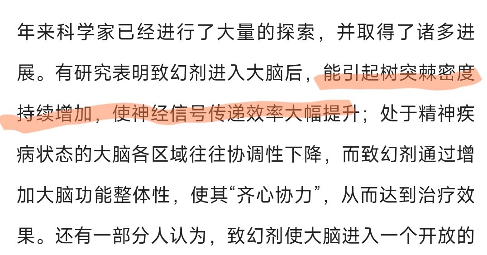

🍀🍥竹蜻蜓🍥🍀
@zqtlovekris99
@TonyGonePostal 夺舍不了，上次试过了，因为致幻剂会大幅度增加脑神经之间的连接，因为被强烈的外界信息干扰导致我找不到他，他后来跟我描述的感觉就是被关在一个地方然后有无数类似荆棘的东西阻止身体跟他连接，所以我现在想玩致幻剂的时候他就很恐惧不让我玩，导致我一直在纠结

🖤🤍Tonielle🙂✝️
@TonyGonePostal
@zqtlovekris99 你玩了致幻剂，失去了完全清醒的意识，Kris就会夺舍你
然后拿刀在你卧室的地上扎出来个黑暗喷泉😈